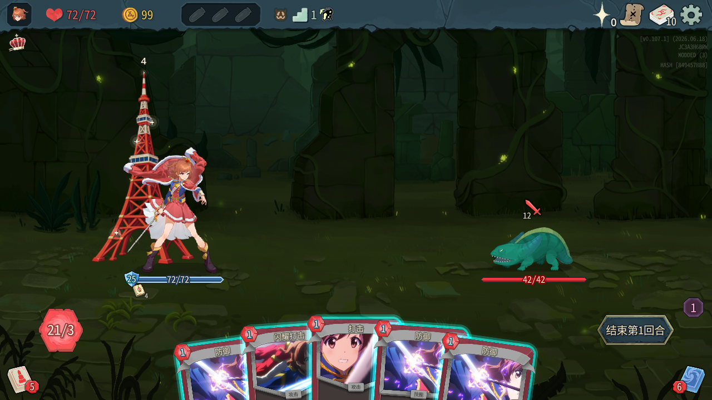
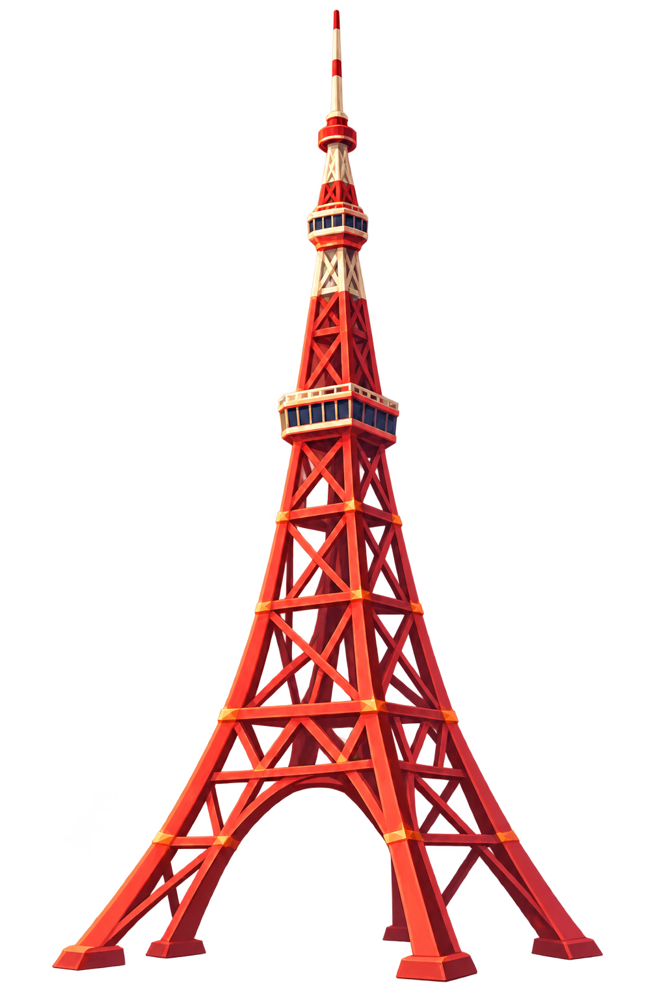
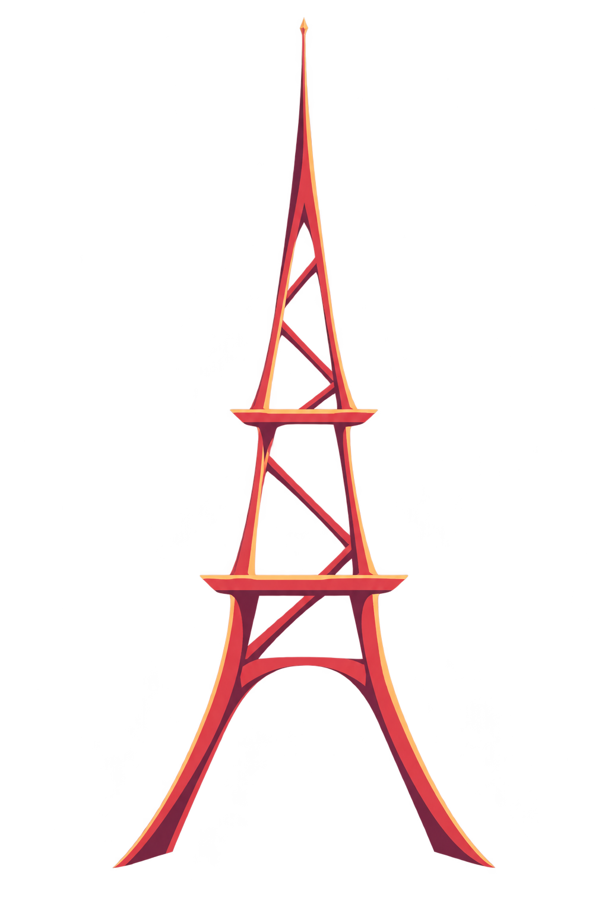
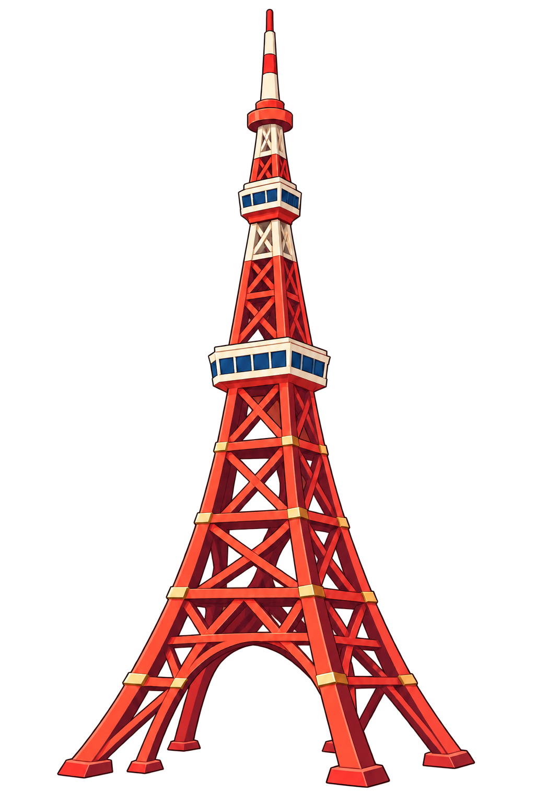
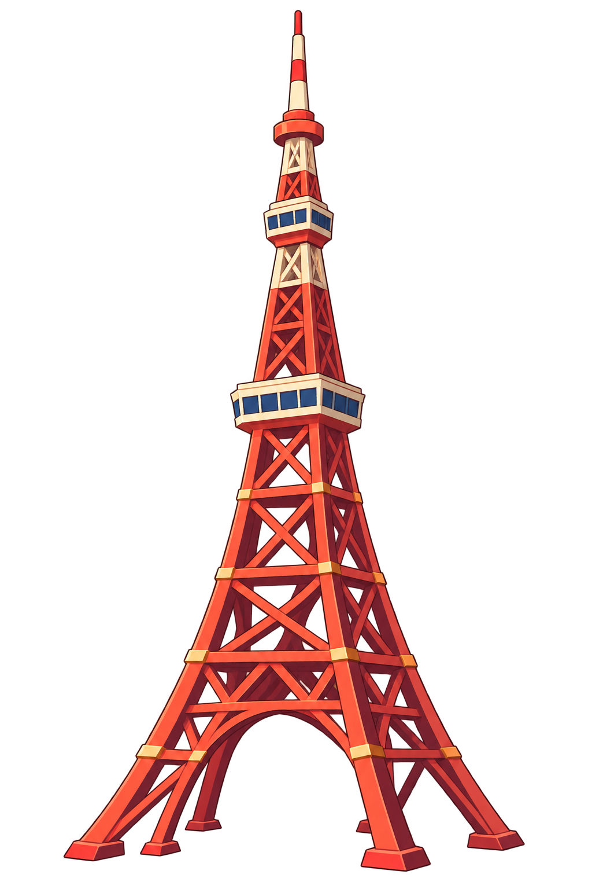

KAREN · PROMISE PILE / 03 已接入游戏
动画手绘，实机效果。
保留钢架、展望台与塔脚，以描边和少量阴影概括体积。
下方截图与录像直接来自 2026-10-10 的游戏测试。库存星光与真实卡牌一一对应；进入空虚模式后，同一组星光转入抽牌堆 icon 周围。

塔身沿用原来的高度和人物后方层级；钢架间隙透明。按反馈将位置回调一半，目前比最初向左约 33 像素，塔身与人物保持少量重叠。缩小显示使用 mipmaps，减少细线闪烁。
同一组星光，转入抽牌堆 · 最新实机
测试版 v0.111.0：4 张牌对应 4 颗星。约第 9 秒，原本绕塔的星光汇入已经消散的抽牌堆位置，重组出新 icon，再从中心弹出，沿倾斜轨道环绕。进入空虚模式后隐藏塔顶数字，数量直接看抽牌堆角标。
抽牌堆局部放大 · 与上方录像同步播放
其他卡牌的星光联动 · 正式版实机
抽牌、对峙生成、坠落存牌、约定之塔取空、星光指引、燃烧、过去与未来、再生产补牌。实测库存数依次为 4 → 3 → 4 → 5 → 0 → 2 → 2 → 2 → 10 → 10。
存牌与取回 · 实机录像
测试版 v0.111.0：存牌、取回、库存星点，以及再生产等模式。此片早于上方的星点分层与虚空动画调整；最新动画以上方短片为准。
三版同尺寸对比
透明镂空，按相同高度显示。第三版保留可辨认的建筑结构，并减弱写实材质。

反馈：太写实

反馈：太抽象

完整钢架，描边与简化阴影
纹理清理 · 100% 局部
左侧为生成原稿，右侧为专门清理细碎纹理后的重绘稿。以下区域不做缩放，窄屏可横向查看。

本次采用内置图像工具的定向去纹理重绘；不是无损滤镜，会改变局部颜色、细节与透明边界。目视复核以规则网纹、细碎假纹理和缩小后的可读性为准，不承诺所有尺度下绝无摩尔纹。